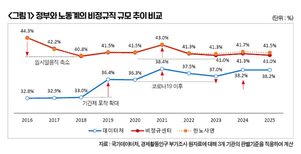
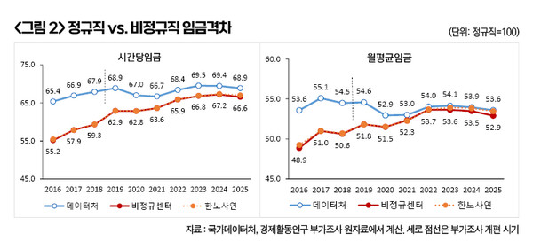
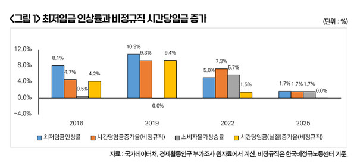

박영삼의 통계로 보는 노동
2025년은 정부-노동계 기준 무엇을 적용하든 격차확대 기록한 첫 해…최저임금 인상률 크게 낮아진 영향 커
정부와 노동계의 2025년 비정규직 규모에 관한 통계가 모두 발표됐다. 지난 10월22일 국가데이터처가 발표한 경제활동인구 부가조사 결과에서는 비정규직 비율이 38.2%로 지난해(38.2%)와 같은 수준을 유지한 것으로 나타났다. 그리고 지난 10일에는 김유선 한국노동사회연구소 이사장의 ‘비정규직 규모와 실태’ 보고서가 발표됐다. 김 이사장은 올해 비정규직 비율이 41.5%로 지난해(41.7%)에 비해 0.2%p 줄어든 것으로 집계했다. 한편 필자가 또다른 비정규직 통계 생산기관인 한국비정규노동센터의 기준을 적용해 계산한 결과 비정규직 비율은 41.0%로 지난해에 비해 0.3%포인트 감소한 것으로 확인됐다.
한노사연과 비정규센터의 비정규직 비율은 41.5%와 41.0%로 0.5%포인트 차이가 발생했는데, 두 기관의 집계방식은 “현 직장을 계속 다닐 수 없는 이유”가 개인사정에 의한 것이나 정년퇴직 등에 따른 것으로 응답한 경우 정규직으로 판단하는지 여부에서 판단을 달리 한다. 앞서의 경우 비정규센터는 정규직으로 판단하는 반면, 한노사연은 계속근무가 불가능하다는 점을 중시해서 비정규직으로 판단한다. 최근 들어 정년퇴직하는 베이비부머들이 늘어나면서 두 기관의 비정규직 비율 차이가 0.5%포인트 정도로 늘어난 것으로 확인된다.

하지만 전체적으로 정부와 노동계의 비정규직 규모 추정치는 격차가 점점 줄어들고 있으며 2025년에도 둘 사이의 간극은 다시 좁혀졌다. 국가데이터처가 2019년 경활 부가조사 문항을 개편한 이후부터 정부 통계에서 기간제 비정규직이 3.5%포인트 가량 더 포착되면서 노동계와의 차이도 줄어들고 변화 방향도 일치하게 됐다. 이에 따라 정부와 노동계의 비정규직 규모 추정치는 2016년에는 32.8%와 44.3%로 그 차이가 11.5%포인트에 달했지만 2019년에는 각각 36.4%와 41.5%로 격차가 5.1%포인트로 줄어들었고 2025년에는 38.2%(정부)와 41.0%(비정규센터)로 불과 2.8%p 차이만 남겨 놓고 있다.
이와 함께 정규직과 비정규직간 임금격차에 관한 통계 차이도 줄어들었다. 정부 기준에서는 2016년 비정규직의 시간당임금이 정규직의 65.4% 수준으로 계산되지만 노동계 기준에서는 55.2%에 불과한 것으로 나타나고 있다. 그러던 것이 2019년 통계 개편 이후에는 정부 기준으로는 68.9% 노동계 기준으로는 62.9% 수준으로 둘 간의 차이가 6.0%p로 줄어들게 되었다. 2025년에 와서는 비정규직의 시간당임금이 정부 기준으로 68.9%이고 노동계 기준으로도 66.8%로 둘 간의 차이는 2.1%포인트로 좁혀졌다.
월평균임금 차이는 시간당임금 차이보다 훨씬 더 적다. 2016년 비정규직 월평균임금은 노동계 기준에서는 정규직의 48.9%로 절반에도 못미치는 수준이었지만 정부 기준으로는 53.6% 수준을 나타내고 있었다. 2025년의 비정규직 월평균임금은 노동계 기준으로 정규직의 52.9%이며 정부 기준으로는 53.6% 수준에 달해, 이제 둘 간 차이는 0.7%포인트에 불과하다.

이처럼 정부와 노동계의 비정규직 통계 차이가 좁혀지면서 문제인식의 공감대는 보다 폭넓게 형성될 수 있는 기반이 만들어지게 되었다. 가장 뚜렷한 특징은 2025년에 시간당임금과 월평균임금에서 정규직과 비정규직간 격차가 어떤 기준을 사용해도 공통적으로 확대되었다는 점이다. 정부 기준에서는 시간당임금과 월평균임금 모두 2024, 2025년 2년 연속 격차가 확대된 것으로 나타났으며. 노동계 기준에서는 월평균임금은 2023년 이후 3년 연속 격차가 확대되고 있으며 시간당임금으로는 2025년에 격차가 확대된 것으로 집계되었다. 특히 노동계 기준으로 시간당임금 격차가 확대된 것은 적어도 2016년 이후로는 2020년 코로나사태 때(+0.1%포인트)를 제외하고는 2025년이 유일하다. 격차 확대폭도 +0.6%포인트로 상당히 큰 편이다.
이처럼 여러 측면에서 정규직과 비정규직의 임금격차가 다시 확대되고 있는 것은 무엇보다도 최저임금 인상률이 낮아진 원인이 크게 작용하고 있다. 2016년과 2019년 최저임금 인상률은 8.1%와 10.9%였고 비정규직의 시간당임금 증가율은 4.7%와 9.3%를 기록했다. 더구나 당시에는 소비자물가 상승률이 낮은 수준이어서 비정규직의 시간당임금 실질증가율도 각각 4.2%와 9.4%를 기록했었다. 하지만 2025년에는 최저임금이 1.7% 인상에 그쳤고 비정규직의 시간당임금도 1.7% 증가에 그쳤다. 소비자물가 상승률(1.7%)까지 감안한 2025년 최저임금 실질증가율은 사실상 제로(0.0%) 수준이다.

결론적으로 2025년은 정부와 노동계 기준 무엇을 사용하든, 그리고 시간당임금과 월평균임금 모두 정규직 대비 비정규직 격차가 확대된 해로 기록되었다. 이러한 상황은 내년까지도 이어질 전망이다. 2026년 최저임금 인상률은 2.9%로 이미 결정된 상태인 반면, 내년 경제성장률과 소비자물가 상승률은 각각 2% 안팎으로 예상되고 있다. 현재로서는 정규직과 비정규직의 임금격차 확대가 내년에도 재연될 가능성이 크다. 이 흐름을 반전시키기 위해서는 2026년 임금교섭과 최저임금 심의의 기조 변화가 필요한 상황이다.

고려대 노동문제연구소 노동데이터센터장 (youngsampk@gmail.com)